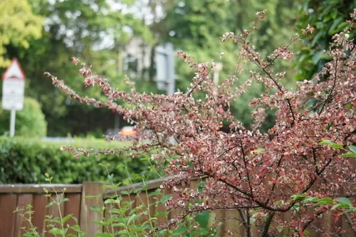

枝枯病
部分枝条干枯死亡
这是与该表现相符的一种可能原因，请结合下方特征核对。

先看哪里
顺着枯枝向下寻找活组织，看看分界处是否有折痕、凹陷或绑带勒伤。
可能原因与下一步
局部损伤或枝条病害可造成单枝回枯。松开过紧绑带，标记边界；若扩大，拍摄整株及交界处求助。
部分枝条干枯死亡
这是与该表现相符的一种可能原因，请结合下方特征核对。

顺着枯枝向下寻找活组织，看看分界处是否有折痕、凹陷或绑带勒伤。
局部损伤或枝条病害可造成单枝回枯。松开过紧绑带，标记边界；若扩大，拍摄整株及交界处求助。